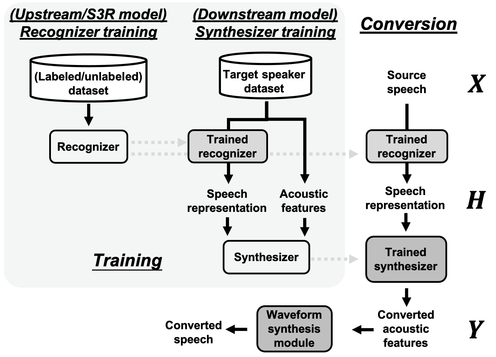
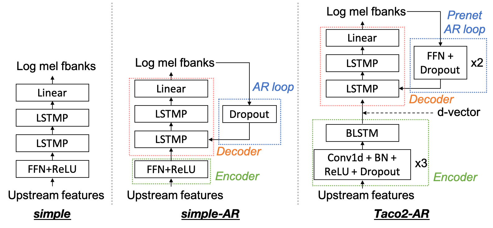

Abstract: This paper introduces S3PRL-VC, an open-source voice conver- sion (VC) framework based on the S3PRL toolkit. In the context of recognition-synthesis VC, self-supervised speech representation (S3R) is valuable in its potential to replace the expensive supervised representation adopted by state-of-the-art VC systems. Moreover, we claim that VC is a good probing task for S3R analysis. In this work, we provide a series of in-depth analyses by benchmarking on the two tasks in VCC2020, namely intra-/cross-lingual any-to-one (A2O) VC, as well as an any-to-any (A2A) setting. We also provide comparisons between not only different S3Rs but also top systems in VCC2020 with supervised representations. Systematic objective and subjective evaluation were conducted, and we show that S3R is comparable with VCC2020 top systems in the A2O setting in terms of similarity, and achieves state-of-the-art in S3R-based A2A VC. We believe the extensive analysis, as well as the toolkit itself, con- tribute to not only the S3R community but also the VC community. The codebase is now open-sourced.
Methods (Models)
Overview of recognition-synthesis voice conversion.
Models implemented.


Dataset
We evaluated our proposed framework on the Voice Conversion Challenge 2020 (VCC 2020) dataset. [Paper][Datasets]